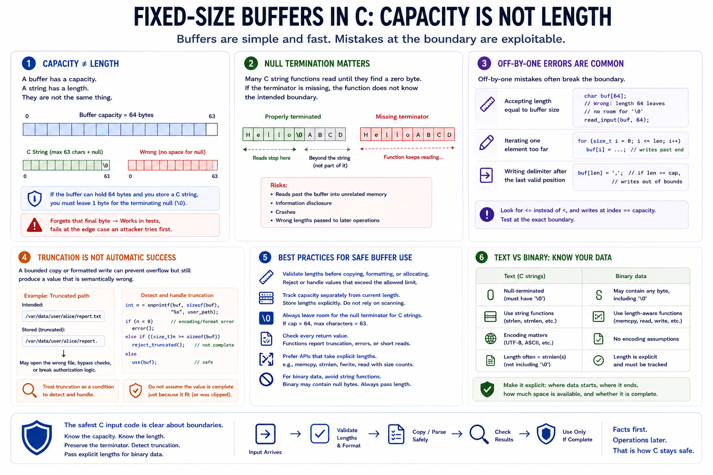

Buffer Sizes and String Boundaries
Connecting to LMS... Progress: in progress

Narration
Fixed-size buffers are common in C because they are simple, fast, and predictable. They are also unforgiving. A buffer has a capacity, a string has a length, and those two values are not the same thing. If a buffer can hold 64 bytes and the value is meant to be a C string, one byte must remain available for the terminating null byte. Code that forgets that final byte can look correct during normal testing and still fail at exactly the edge case an attacker will try first.
Null termination matters because many C string functions keep reading until they find a zero byte. If the terminator is missing, the function does not know the intended boundary. It may read past the buffer into unrelated memory, disclose data, crash, or feed a later copy with an unexpected length. Off-by-one errors often appear here: accepting a length equal to the buffer size when the program also needs a terminator, iterating one element too far, or writing a delimiter after the last valid position.
Truncation is another boundary issue. A bounded copy or formatted write can prevent an overflow while still producing a value that is semantically wrong. A truncated file path, user name, token, or protocol field may cause authorization mistakes or confusing behavior. Treat truncation as a condition to detect and handle, not as automatic success. Validate lengths before copying, formatting, or allocating. Track capacity separately from current length. For binary data, avoid string assumptions entirely and pass explicit lengths with buffers. The safest C input code is clear about where data starts, where it ends, how much space is available, and whether the stored value is complete.